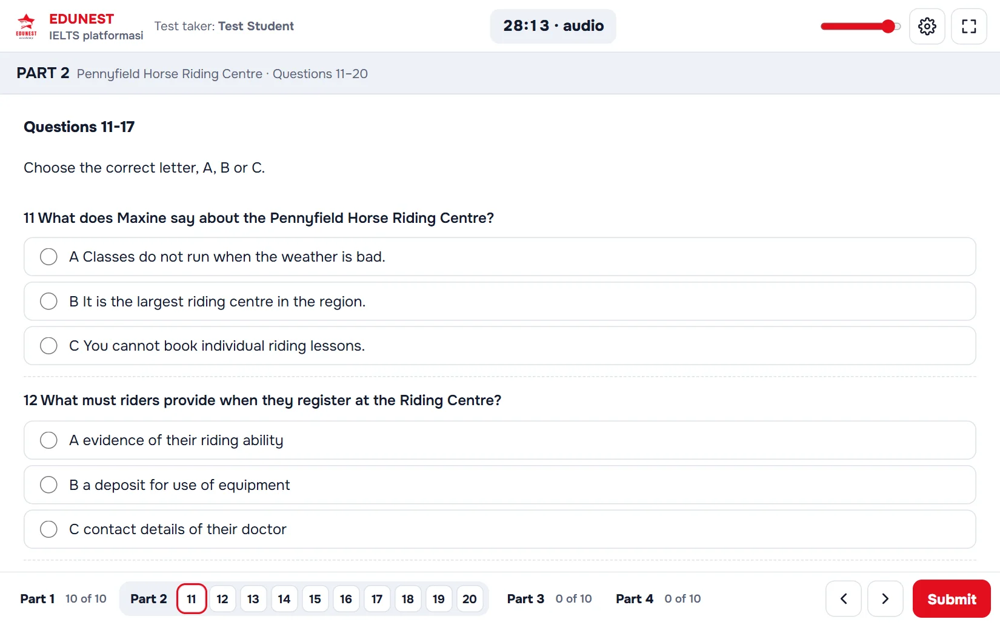

01 / 03
Listening
9 ta to‘liq Listening testi: 4 qism, 40 savol
- Audio bir marta eshittiriladi — xuddi imtihondagidek
- Xarita, jadval va variantli savollar kompyuterdagi IELTS ko‘rinishida
- Ko‘rib chiqishda audioni qayta tinglab, xatoni topasiz
